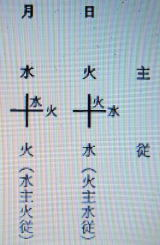
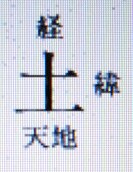
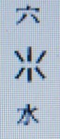

森羅万象の構成について ３
明主様御講義 「人体の構成」 （昭和11年7月）
「人体の構成はヤハリ「火、水、土」の三原素から成っております。
地 土・・・筋、骨、肉、皮・・・等に相応する
月 水・・・血液、漿液等（水分は人間の身体の約七割に当るという）
日 火・・・精霊体
血液は、赤血と白血とに成っております。
赤血は「日の霊素」から成り、白血は「月の霊素」から成っております。
赤血が速く流れるのが、動脈で、白血が緩かに流れるのが静脈であります。・・・
これは、健康時の状態であります。
病気になると・・・「月の霊素」は「膿汁」と化し、「日の要素」は「毒血」に化するんであります。」 （「岡田先生療病術講義録 上巻 １」より）
明主様御講義 「内臓の三位一体」 （昭和11年7月）
「次に、胃と肺と心臓との関係を検討してみますと・・・
今日までのあらゆる医術では「月と土」に相応する関係上「胃と肺」に関しては、相当に研究されて来たが『心臓』の事は、あまり徹底されなかったようであります。
今日までの解釈でゆくと・・・肺臓の呼吸運動によって、血液は浄化され、それが心臓に還元する・・・とされていますが、
吾々の解釈によりますと・・・、
血液の浄化は「肺と心臓との共同作業」であります。
それは、いかなる訳かといいますと、心臓は「火の霊素」を以て「血液中の汚素」を燃焼し、
肺は、それの灰ともいうべき残渣（ざんさ）を、洗浄する・・・
それによって血液は浄化されるのでありますが、
その「火水の浄化」の為に生ずる最後の汚濁・・・それの堆積も、病原としての、最大要素となるのであります。
これをたとえていえば、地上の汚濁は、日光で消毒し、雨水で洗い浄めるのと同一の意味であります。
ここで、火と水の性質を説明する必要があります。
元来「火は水によって燃え、水は火によって動く」のであります。
ツマリ、火は、水分があるから燃える時間があるので、全然水分が無かったなら、一瞬に爆発してしまうのであります。
又、水は、火の熱が無かったなら、それは氷であって、流動する事は全然不可能でありましょう。
水を火で温めるに従って、熱し沸き・・・動力が起るのであります。
又ガソリンも水であり石炭も木炭も水分があるから持続的に燃えて火力を生ずるのであります。
又、水力電気の水の圧力も、熱によって流動するからであり、草木の化育繁茂するのも「火と水」とによって生活力が起るからであります。
右の理によって「心臓と肺の関係」は火と水であるから・・・心臓に火力が強ければ、水である肺の活動が旺盛になり、
肺に水分が多ければ火である心臓の活動が強盛になるのであります。
心臓は「精霊界」から霊素（太陽熱である火素）を絶えず「鼓動」によって吸収しており、
肺臓は「空気界」から、気素（太陰冷である水素）を、断えず「呼吸」によって吸収しており、
胃は「物質界」から「食物」（物質である土素）を供給されております。
吾々はこれを内臓の三位一体といっております。
心臓が旺んに火素を吸収する事によって、愛の情動が旺盛になるので、
その愛情の強盛によって、憎み、嫉み、怨み等の争の根源が無くなるから、ここに平和が生れるのであります。
しかるに、今日までは外来的理性文化の影響によって、火素とは反対の「月の冷素」 の方を多く吸収する関係上、
どうしても愛の情動が稀薄になり、それが争や戦争、病気等の原因となったと思うのであります。
又 科学は、学理から成ったものであるから、どうしても理性に偏るもので、
これらも愛の情動を稀薄ならしめる・・・有力な原因で、
その結果どうしても個人主義に傾き、人類社会はいかにも冷たかったのであります。
事実、肺患者は利己愛の強い人が多いのは、この理によるのであります。
近来、外来文化等の影響により、火の霊素即ち日本精神が欠乏する事によって肺の弱い者が多くなったのも当然な訳であります。
今日までは「心臓の働き」が判らなかったというのは、日本精神が眠っていたからであると思います。
私が多くの肺患者を取扱った実験上、どうも西洋思想つまり科学崇拝者が多いのであります。
彼の反日本精神ともいうべき共産主義者に肺患の多い事実はこの消息を如実に物語っていると思うのであります。
右のような訳ですから、どうしても火の霊素を多く吸収する事が肝要であります。
その結果心臓は活発になるから、肺が健全になり、胃の活動も旺盛になるんであります。
故に、健康の根本としては、日本精神の保有者たる事が最も肝腎である事が知られるのであります。
大きくいうならば、世界の心臓に当る国である・・・日本文化の発展拡充こそ「肺に当る西洋」を目覚めさせる事になり、
その結果が「胃に当る非文化国」の幸福と発展を促すという事になるのであります。
すべて光というものは何であるかというと、それは「火と水の密合したもの」・・・であります。
空気でも「陰電子と陽電子との密合」によって光を発生する・・・それと同じ訳であります。
日の光と月の光はなぜ異うか・・・というと、

右の如く、
日光は火が主で、表面で、水が従で陰即ち裏面に在り、
月光は、水が主で、表面をなし、火が従で陰即ち、裏にあるのであります。
月は、氷結の如き冷塊で、背後から「太陽の光」が映って光り、
太陽は常に燃焼している″火の塊″で、背後に「月の水」が映って光るのであります。
故に、両方反対で、一方は陽、一方は陰、即ち「昼と夜」との区別が生ずるのであります。
面白い事には、火は経に燃え、水は緯に流れる。「経と緯」との性能を有っている。
このような反対のものが結ばれて「活力」が生ずるのであります。

心臓・・・ 火・・・経 ｜
肺臓・・・ 水・・・緯 ―
土 胃・・・大地・・・ ―
火と水とは、はなればなれでは、全然活動がないのであります。
「火と水の結合によって、動力を生ずる」・・・それが「大地即ち胃の土」であるから、前記のごとく『土』という文字となるんであります。

経
土 緯
天 地
これが完成の意味が「成」即ち「也」となり『地』となるんであります。
成・・・地
人間の夫婦もその道理で、夫婦結合し、協力し、活動が起り、子を産み、事業を営み、人類社会を無限に進化発展させるのであります。」 （「岡田先生療病術講義録 上巻 １」より）
明主様御講義 「痛みと熱」 （昭和11年7月）
「身体の一部に病気が起るとする。これは汚毒を排除しようとする為の症状で、それを溶解する為の熱である事は、充分お解りになったと思います。
しからば、その熱は一体どこから出るのかというと・・・、もし身体自身から熱が出るとすれば、平常身体のどこかにその熱の貯蔵所がなくてはならぬはずで、その貯蔵所は常に火のように熱くなければならない。
ところがそういう所は全然なく、病気になるとどこからか出て来る。実に不思議であります。
しからば一体どこからどうして熱という素晴しい膿結溶解作用が出て来るかという事でありますが、この最も肝腎な事が今日まで更に判っていないのであります。
三界の説明にもある通り「霊界は太陽熱」即ち火素が主となっております。
この火素が発熱の素なのであります。
即ち、熱を要する場合心臓は旺んにこの火素を吸収する。
その吸収旺盛の為に鼓動が激しいのであります。
又、心臓が火素を吸収せんとする時寒気がしますが、あれは病気治癒に要する熱を取る為に、身体全部への必要量の吸収を一時停止するからであります。
次に、痛みというものは何であるか、吾々の方の解釈では毒素の排除作用が神経を刺戟するのであります。
故に、排除しようとする活動力が旺盛であればある程・・・痛みが激しいのであります。
ですから痛みがある程・・・治る工作が迅速に進んで居る証拠であります。
故に、熱があり、痛みがあれば、その時こそ最も旺んに治りつゝあるのであります。
随って、この場合解熱法を施しますと、熱という溶解作用が停止される。
即ち治るべき作用を停止されるから一時苦痛は楽になるが病気の治癒は遅れる事になるのであります。
しかし、衰弱している人でも、割合高熱のある場合もありますが、これは病気の方が強過ぎるのであります。
又、病気があっても割合熱が出ないのは、その病気が割合軽い場合か、又は第一種健康体の人で、浄化力が特に旺盛だからであります。
第一種の人は熱を必要としない程に浄化力が強盛であります。
でありますから、あらゆる病気は苦痛でない限りは身体を活動させて差支えないのであります。
それは安静にする程活力が弱まり、従って、発熱が減少するからであります。
例えば、肺病の治療は、日本では近来・・・絶対安静療法を採って居りますが、これらは反対に運動をすれば活力が起って、浄化力は旺盛となり速く治るのであります。
近来西洋でも、仕事をしながら治すという事を聞きましたが、私の説と同じでまことに喜ばしい訳であります。
この故に、熱と痛みなるものは、治病工作上悪い意味ではないのであります。」 （「岡田先生療病術講義録 上巻 ３」より）
明主様御講話 「人間は三つの元素よりなる」 （昭和15年5月4日）
「森羅万象は三つの元素から成り立っている。
これに離れているものは一つもない。
火、水、土の本体は、日、月、地なり。
いまの学説では、星は太陽より上にあり、と唱うれど、
これは太陽より上の星は絶対ないので、月より下と月より上とある。
星には火の星と水の星とあり、
水の星は青白く、

となる。
火の星は赤い、

となる。
すなわち、五六七は火と水と土ということになる。
五六七は六六六となり、六が三つゆえ三六となる。
このうちの一つが下へ行って、五六七という形になる。
これは非常に神秘のあることである。
すなわち、一つが下へ行って土となったことはおもしろいが、いま、説明はできない。
緯の火水土は
霊 霊気 火
空 空気 水
現 物質 土
すべて物質は土から出て土に還元する。
われわれが住んでいる全体が物、空、霊密合している。
経も緯も決して別々ではない、ピッタリ密合してる。
物質の中に空気あり、空気に霊気あり、緯の働きになっている。
緯の三段を人類は知らなかった。
火と水といっても、火のみでなく水のみでもない。
火の中に水あり、水の中に火あり、ただ水は水が主であり、火は火が主である。
水は火なくば氷魂なり。氷がとけて初めて動く。
故に、火と水はどっちも離れていないもので、共同作業である。
人間で言えば夫婦と同じこと、陰陽である。
人類は夫婦があって持続してゆく。
空間の火と水（調和）というものが、この治療に非常に関係がある。
昼 明
夜 暗
これも陰陽で火と水になる。
火の場合 昼は火主水従
水の場合 夜は水主火従 夜は月が出る。
月は氷塊である。
昼は太陽が支配する。
人類はいままで緯の三段を知らなかった。
それは夜だったゆえである。
日がなかった、隠れていた。
霊気の世界を知らなかった。
日本は明治以前まで鎖国を叫んだ。
徳川の天下がなければ、フィリピンなど大いに海外発展していたものをと言う人がある。
ところが時期が昼になっていないため絶対鎖国した。
夜の時代ゆえ、国威を外国へ及ぼすことはできなかった。
これは天地自然の理だが、明治になってから自然に世界へ知れてきた。
ぺリーなど来て日本の存在を世界へ知らした。
これは夜の故で、昼になるとどうしても世界を照らしてゆかねばならぬ。
日本の知られざりしごとく、霊気のことは知られなかった。
人類は霊気の世界を知ることになる。私はごく先んじて知った。
霊界は火が主
空気界は水が主
人間は三つの元素によりなる。
肉体 現象 土 （骨皮など） ・・・三
水分に属するもの 水 （医学では七十％ありという）・・・七
人間の霊 火（これがはっきり分からぬ） ・・・十
故に人間は霊と体で生きてる。
カラダに霊（ひ）止まりてヒトになる。
霊は肉体と同じ形。
肉体が使用に堪えなければ霊は脱ける法則になってる。
サック壊れれば霊止まれぬ。
例えば負傷して何升か出血すると、霊は肉体に止まることができなくなる。」